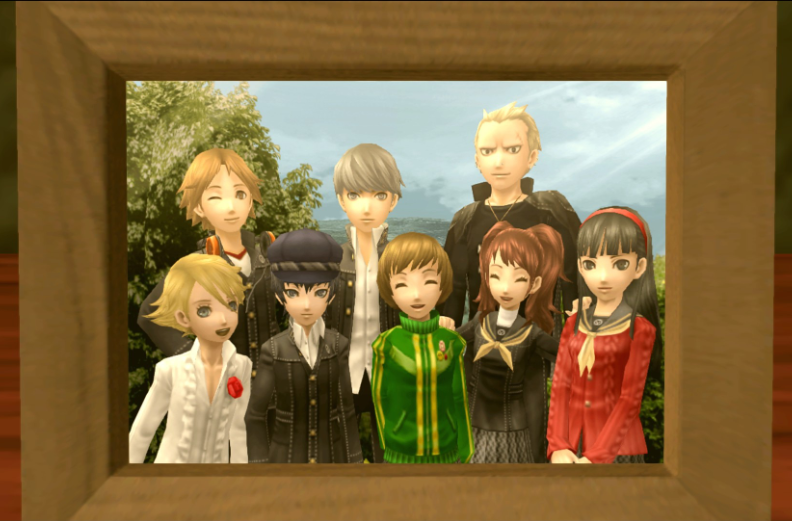
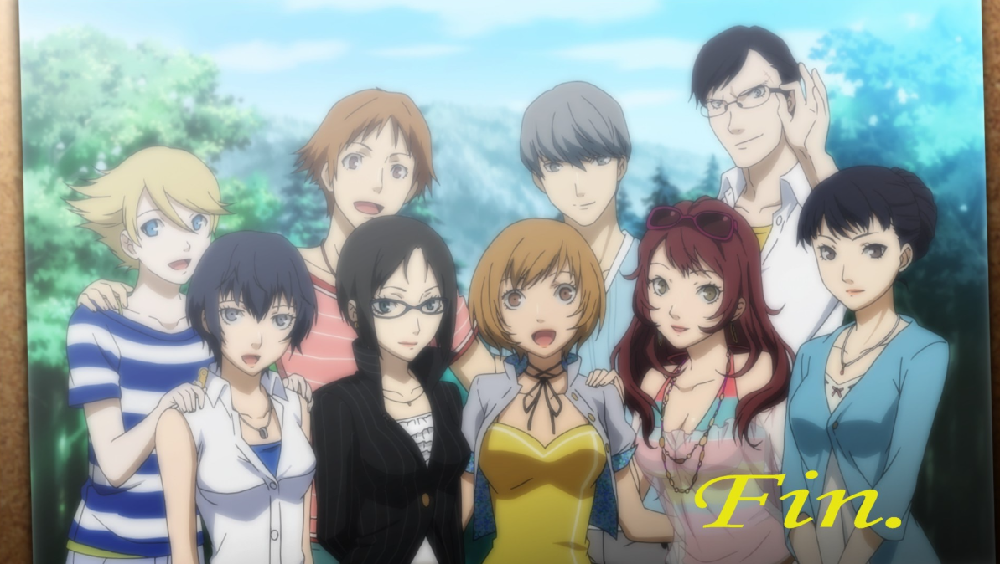

Persona 4 Gold is a JRPG slice of life, dating sim, turn based combat game set in a small, comfy, japanese town. You play as a student who has transfered over there from the city to live with his uncle and cousin. Soon after arriving multiple murders start happening and it's up to you and your new friends to find and stop the killer by entering a strange tv world where peoples darkest thoughts are represented as shadows.
The gameplay loop is fairly solid. In general you'll have a deadline date in a few weeks to save somebody from the TV. You fill up each day with a variety of activities such as, going to school, advancing relationships with npcs, upgrading your characters stats, completing side quests, shopping, and entering the tv to do battle with shadows. Most of these options involve text based dialog, the main stuff is usually voice acted though. It is an old game so one annoying side is that you can go 30 seconds between save points, you can also go over an hour between them. I mostly played this at night so this was actually quite annoying sometimes were I'd be drifting off to sleep yet be forced to play for another 30 minutes or lose all my progress.
The actual turn based combat is ok, though I stuck it on easy mode so I wasn't challenged enough to properly learn it. I did enjoy the character designs of the shadows and the world that each victim inhabbits. I did have to grind a little even on easy mode so thats something to watch out for if you play on a higher difficulty and you hate grinding like me.

The main meat of these type of games is the characters and story. The story is just ok, servicable. It has a bunch of twists but follows a basic plot of solve the mysterious serial killer with your misfit friends. The characters are pretty good though, they are all varied and quirky and since the game is pretty damn long (60hrs+) you get a long time to know them and care for them and miss them when you have finished the game. My favorite character is Teddy. I will say though the protagonist is a bit weird though, it's one of those games where he barely seems to say anything yet everyone treats him like a god and their leader. It's not too bad, I get what they where doing, I'd have prefered it if he had a bit of his own personality or maybe wasn't treated like the senpia leader and instead just another member of the group.
The setting is really nice. It's an idealic small japanese town where most of the residents know each other with pretty country side surrounding it. I like how the weather, and things like rain at midnight, is important to the story. I like how you stay in a little Japanese house with an adorable little girl and a farther like detective figure. It sort of feels like your house and your a part of the family by the end of it.
It's an older game from the ps2 era and whilst I can see why it was rated so highly back then now I would class it just as good. It's a bit too long for me, although that does help you build a conection to the characters, also it's mechanics feel a little dated, not too much though. I did enjoy the atmosphere / slice of life aspects of it quite a bit and overal its a solid package.
